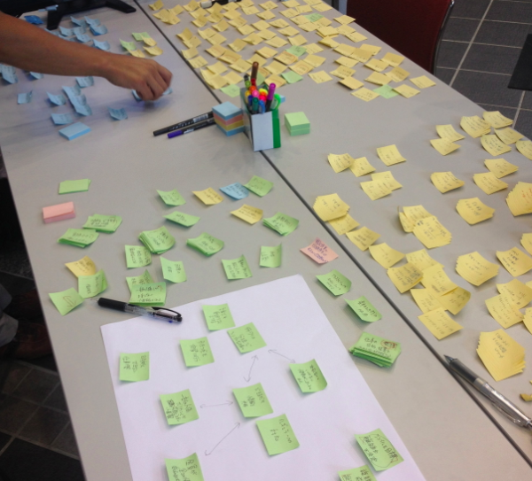

このサイトではサイボウズ・ラボの西尾泰和と竹迫良範が
京都大学サマーデザインスクール 2013で行った
「チームワークのデザイン」の講義資料を公開しています。

成果発表会でのスピーチ
みなさん、難しい問題を考えるときにはどのようにやっていますか？書き出してから考えることが大事です。目隠し将棋と普通の将棋はどちらが簡単か、暗算と筆算はどちらが簡単か、考えて見れば明らかです。頭のなかだけで考えようとすると、覚えておくために脳の一部が割かれてしまいます。
わたしたちのチームでは最終的に、なんと750枚もの付箋を消費しました。
その大量の付箋をどうするのか？ボトムアップで組み立てることが大事です。わたしたちは予期しないつながりや構造を見出したいのです。トップダウンで構造を決めつけるのではなく、どういう形になっているか先入観なく観察することが必要です。
わたしたちのチームでは「書いてから考えること」「ボトムアップで組み上げること」を重視しました。この成果発表会で「何を発表するのか」「どう発表するのか」も、みんなで書き出し組み上げて決めました。いかがだったでしょうか？楽しんでいただけたのなら幸いです。
メールアドレス: nishio (dot) hirokazu (at) gmail (dot) com
西尾泰和のプロフィールに戻る